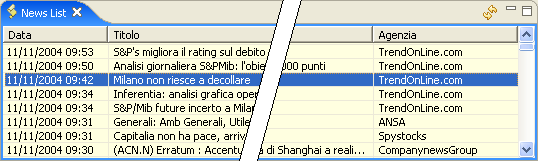

La finestra delle notizie viene mostrata selezionando Show News dal menu Window.

La finestra mostra l'elenco delle notizie fornite dal provider selezionato nelle preferenze ordinate per data (la più recente per prima). Con un doppio click del mouse su una riga viene aperta la finestra del browser in cui verrà visualizzato il testo della notizia selezionata.
Il pulsante in alto a destra consente di aggiornare il contenuto della lista.